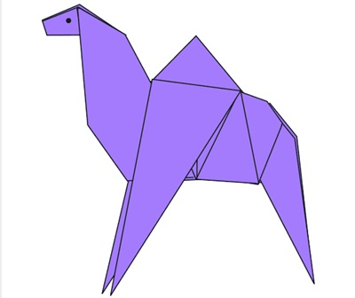
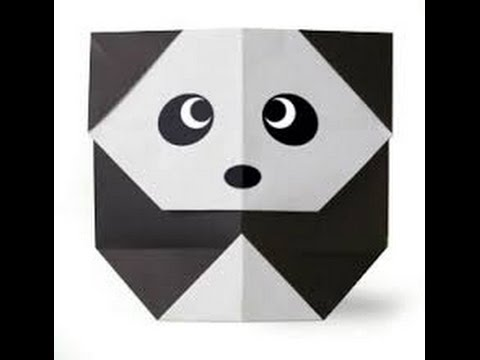

Camel
- camel's ears are furry
- camel can move easily across the sand because of its specially Designs feet
- When they find water, thy will drink as much as possible.

Panda
- A giant panda is much bigger than your teddy bear.
- Giant pandas are good at climbing trees and can also swim.
- Pandas eat consistently for 12-14 hours a day!
- “Giant panda” is actually just a nickname for a panda; they are no specifically larger than others.